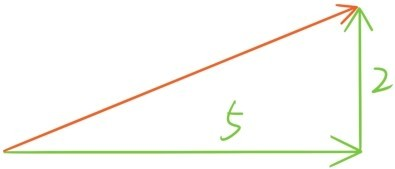
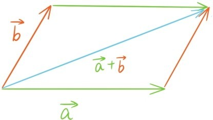
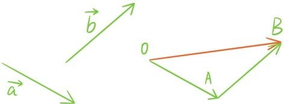
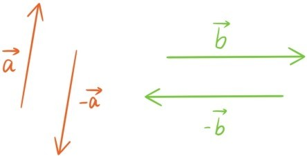
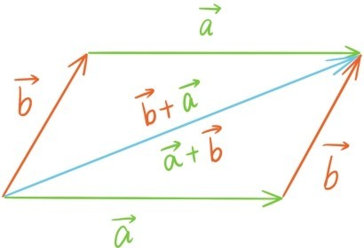
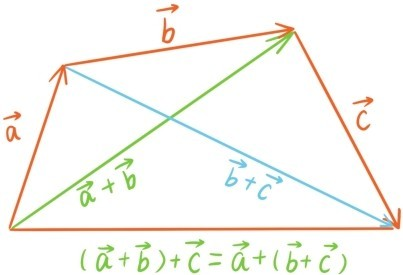
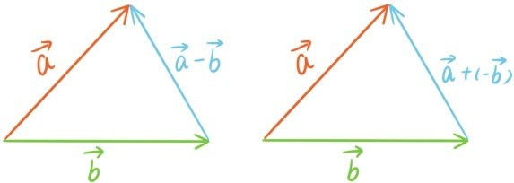

在运动中经常要用到两次位移的叠加，比如先往右走5米，再向上走2米，两次位移的叠加就可以用下图橙色向量表示：


在中学物理中，两个力的合力是用平行四边形法则求出的。由这些例子可以引申出向量的加法。
设给定两个向量 与 ，从空间中一个固定点O出发作有向线段，使得，再从点A出发作有向线段，使得。

向量 与 相加的和就是定义为从点O到点B的向量，记作。这种求和方式称为三角形法则。因为两点之间线段最短，所以，即向量的三角不等式
当且仅当向量与同方向时等号成立（注意这里和都有可能是零向量，这时等号成立，而零向量的方向是不定的，所以可以看成与任何向量都同方向）。根据加法的定义，任何向量加上零向量都是不变的。

两个长度相等，方向相反的向量称为（互为）反向量。我们把向量 的反向量记作。很容易看出，两个反向量的和为零向量：。
向量的加法运算满足：
1．加法交换律：。

2．加法结合律：。

正是因为向量加法满足交换律和结合律，所以和数的加法一样，任意有限个向量，不论它们的先后顺序和结合顺序如何，它们相加的和总是相同的。利用相反数，数的加法可以派生减法。同样的道理，利用反向量，向量的加法也可以派生向量的减法

提问时间
7.2.1 若在圆心为O的圆上有n个点A1，A2，…，An把圆周分成相等的n段弧，证明。（提示：将这n个向量旋转）